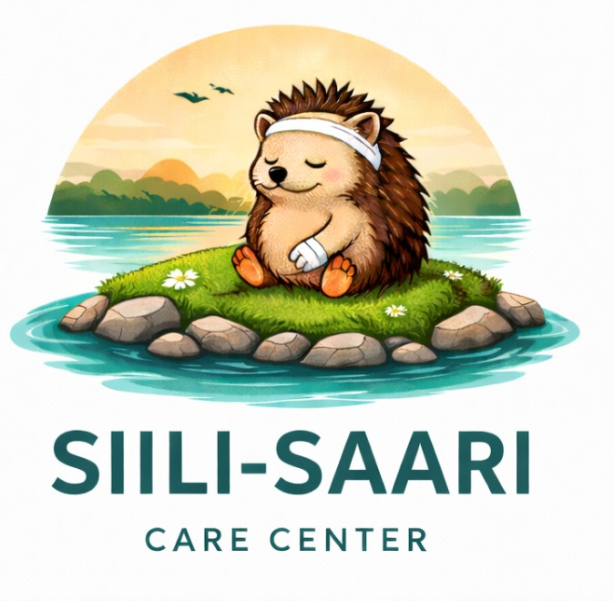

Siili-Saari Care Center ry
Guide till registrering som ideell forening i Finland
En steg-for-steg-handbok for att registrera var igelkottsrehabilitering som en registrerad forening (rekisteroity yhdistys) hos Patent- och registerstyrelsen (PRH).
Utarbetad: 14 april 2026
For: Johanna Tidstrom, medgrundare & verksamhetschef
Av: Assaf Wydra, veterinar & grundare
Innehall
- Oversikt — Vad ar en registrerad forening (ry)?
- Lagstiftning och krav
- Steg-for-steg: Registreringsprocessen
- Stadgar (saannot) — Obligatoriskt innehall
- Grundandehandlingar
- Konstituerande mote (perustavakokous)
- Kostnader
- Tidsplan
- Efter registrering — Lopande skyldigheter
- Sarskilda krav for djurrehabilitering
- Bankkonto
- Statsbidrag och finansiering
- Checklista
1. Oversikt — Vad ar en registrerad forening (ry)?
En rekisteroity yhdistys (ry) ar den vanligaste formen for ideella organisationer i Finland. Genom registrering hos Patent- och registerstyrelsen (PRH) far foreningen status som juridisk person, vilket innebar att den kan:
- Oppna bankkonto i foreningens namn
- Ingaa avtal och aga egendom
- Ansoka om bidrag och understod
- Agera som arbetsgivare
- Medlemmarna har inget personligt ansvar for foreningens skulder
Varfor ry for Siili-Saari? Registrering som ry ar nodvandig for att kunna ansoka om statsbidrag for vilddjursrehabilitering (upp till 75 % av driftskostnaderna). Utan ry-status kan vi inte fa dessa medel.
2. Lagstiftning och krav
Grundlag
Foreningslagen (Yhdistyslaki) 503/1989 reglerar alla registrerade foreningar i Finland. Lagen finns pa Finlex: finlex.fi/fi/laki/ajantasa/1989/19890503
Grundlaggande krav
- Minst 3 grundare som undertecknar grundandehandlingen
- Grundare maste vara minst 15 ar gamla
- Utlandska medborgare far grunda foreningar — inget krav pa finskt medborgarskap
- Ordforanden maste vara bosatt i Finland (annars kravs dispens fran PRH)
- Foreningen maste ha ett ideellt syfte (inte vinstdrivande)
- Juridiska personer (foretag, andra foreningar) kan ocksa vara grundare
Viktigt om namn: Foreningens namn maste vara pa finska eller svenska (eller bada). "Siili-Saari Care Center ry" fungerar da "Siili-Saari" ar finska. Alternativt: "Siili-Saari ry" eller "Siili-Saari Hoitola ry" med engelsk undertext.
3. Steg-for-steg: Registreringsprocessen
Rekommenderad metod: Guidad registrering online
PRH erbjuder en guidad e-tjanst som genererar stadgar automatiskt baserat pa dina val. Detta ar snabbast, billigast och enklast.
-
Forberedelse
Samla minst 3 grundare. Bestam foreningens namn, hemort (Vasa), syfte och verksamhetsformer. Valj styrelsemedlemmar.
-
Konstituerande mote
Hall motet, godkann stadgarna, valj styrelse och revisorer, underteckna grundandehandlingen (perustamiskirja). Se kapitel 6 for detaljerad dagordning.
-
Logga in pa PRH:s e-tjanst
Ga till prh.fi/yhdistysrekisteri/asiointi. Krav: finskt personnummer + bankidentifiering eller mobilcertifikat.
-
Fyll i uppgifterna
Systemet vag leder dig genom stadgarna. Ange styrelsemedlemmar, undertecknare och ovriga uppgifter.
-
Bifoga grundandehandling
Ladda upp den undertecknade perustamiskirjan som PDF eller JPG. For utlandska grundare: bifoga passkopia.
-
Betala och skicka
Betala avgiften (60 EUR) direkt online. Signera elektroniskt. Registreringen skickas till PRH.
-
Invanta beslut
Handlaggningstid ca 4 arbetsdagar for elektroniska anmalningar. Forsta registerutdraget ar gratis.
Tips: Om du anvander PRH:s guidade registrering behover stadgarna inte granskas separat — mallarna ar forhandsgodkanda. Egna stadgar (120 EUR) maste granskas av PRH, vilket kan ta langre tid.
4. Stadgar (saannot) — Obligatoriskt innehall
Enligt Foreningslagen 8 ss. maste stadgarna innehalla foljande 9 obligatoriska punkter:
- Foreningens namn — t.ex. "Siili-Saari Care Center ry"
- Hemort — en finsk kommun, t.ex. "Vasa" (Vaasa)
- Syfte och verksamhetsformer — rehabilitering av igelkottar, utbildning, samhallsupplysning
- Medlemsavgifter och andra avgifter — belopp eller att arsmotot beslutar
- Antal styrelsemedlemmar och revisorer — exakt antal eller min/max (t.ex. 3–7 styrelsemedlemmar)
- Mandatperiod — for styrelse och revisorer (t.ex. ett kalender ar)
- Rakenskapsperiod — t.ex. kalender aret (1.1–31.12)
- Kallelse till moten — hur och inom vilken tid moteskallelsen maste skickas (t.ex. "minst 14 dagar fore motet per e-post")
- Tillgangar vid upplosning — hur foreningens medel anvands om den upploses (t.ex. "doneras till djurskyddsandamal")
Forslag for Siili-Saari:s syftesparagraf
"Foreningens syfte ar att framma skyddet av den europeiska igelkotten (Erinaceus europaeus) i Finland genom att bedriva rehabilitering av skadade och overgivna igelkottar, utbilda allmanheten om igelkottars levnadsvillkor, samt samarbeta med veterinarmedicinska inrattningar och myndigheter for att sakerstalla artens fortlevnad."
PRH:s mallar
PRH erbjuder 5 fardiga stadgemallar (sääntömallit) pa finska. Tillgangliga pa: prh.fi/fi/yhdistysrekisteri/saantojen-laatiminen/saantomallit.html
- Mall 1 — Enkel (bara obligatoriska punkter)
- Mall 2 — Ett mote, en medlemsgrupp (med distansdeltagande)
- Mall 3 — Ett mote, flera medlemsgrupper
- Mall 4 — Tva moten, en medlemsgrupp
- Mall 5 — Tva moten, flera medlemsgrupper
Rekommendation: Mall 2 passar bra for Siili-Saari — enkel struktur med mojlighet till distansdeltagande.
5. Grundandehandlingar
Perustamiskirja (Grundandehandling)
Dokumentet som formellt grundar foreningen. Maste innehalla:
- Datum och plats for undertecknande
- Forklaring att undertecknarna grundar foreningen
- Foreningens namn
- Hanvisning till de antagna stadgarna
- Alla grundares underskrifter (minst 3 personer)
- Personnummer for varje undertecknare
- For icke-finska medborgare: passkopia (PDF/JPG)
Obs: Elektroniska signaturer godkanns om dokumentet tydligt visar att det signerats elektroniskt och identifierar signeringssystemet.
6. Konstituerande mote (perustavakokous)
Dagordning for det konstituerande motet:
- Motets oppnande
- Val av motesordforande, sekreterare och 2 protokolljusterare
- Godkannande av dagordningen
- Godkannande av foreningens stadgar
(Ge styrelsen fullmakt att gora andringarna som PRH eventuellt kraver)
- Beslut om medlemsavgifter
- Foreningen forklaras grundad — grundandehandlingen undertecknas
- Val av styrelsens ordforande och ovriga medlemmar
Minst 3 styrelsemedlemmar. Ordforanden maste vara minst 18 ar.
- Val av revisor/verksamhetsgranskare
En verksamhetsgranskare (toiminnantarkastaja) racker for sma foreningar. Valj ocksa en suppleant.
- Ovriga arenden (t.ex. logo, forsta aktiviteter, bankkonto)
- Motets avslutande
For Siili-Saari: Vi behover minst 3 grundare pa motet. Forslag: Assaf (ordforande), Johanna (vice ordforande/kassoor), + 1 ytterligare grundande medlem.
7. Kostnader
| Utgift |
Belopp (EUR) |
Anmarkning |
| PRH-registrering (guidad online) |
60 |
Rekommenderat — snabbast |
| PRH-registrering (egna stadgar, online) |
120 |
Om vi vill ha anpassade stadgar |
| Ruokavirasto — anmalan om djurrehabilitering |
85 |
Obligatorisk for verksamheten |
| Bankkonto (oppningsavgift, ca) |
0–300 |
Varierar per bank (Nordea ~300, OP billigare) |
| Registerutdrag (forsta) |
0 |
Gratis vid registrering |
| Totalt (minimum) |
145 |
Guidad registrering + Ruokavirasto |
Lopande kostnader
- Andring av stadgar: 60 EUR per anmalan
- Ovriga anmalningar till PRH (styrelsebyten m.m.): 30 EUR
- Medlemsavgifter: beslutas av arsmotot
8. Tidsplan
| Aktivitet |
Tidsatgang |
| Forberedelse (hitta grundare, skriva stadgar) |
1–2 veckor |
| Konstituerande mote |
1 dag |
| PRH-registrering (elektronisk) |
~4 arbetsdagar |
| Oppna bankkonto |
1–2 veckor |
| Ruokavirasto-anmalan |
Minst 30 dagar fore verksamhetsstart |
| Total tid till full verksamhet |
Ca 6–8 veckor |
9. Efter registrering — Lopande skyldigheter
Arsmote (vuosikokous)
Maste hallas enligt stadgarna (vanligtvis en gang per ar). Pa arsmotot ska foljande behandlas:
- Bokslutet (tilinpaatos) fastastalls
- Verksamhetsberattelse godkanns
- Ansvarsfrihet for styrelsen beviljas
- Styrelse och revisorer/granskare valjs
- Budget och verksamhetsplan godkanns
- Medlemsavgifter fastastalls
Bokforing och ekonomi
- Bokforingsskyldighet galler alla foreningar enligt lag
- Sma foreningar (under 30 000 EUR/ar) far anvanda forenklad bokforing
- Arligt bokslut maste uppratas
- En verksamhetsgranskare (toiminnantarkastaja) racker for sma foreningar — behover inte vara professionell revisor
Skattestatus
- En allmannyttig forening (yleishyodyllinen yhdistys) beskattas bara for eventuell narringsverksamhet
- Igelkottsrehabilitering kvalificerar med stor sannolikhet som allmannyttig verksamhet
- Skattemyndigheten (Verohallinto) bedomer allmannyttigheten arligen
- Skattedeklaration maste lamnas om den begars — annars pafoljs en straffavgift
Anmalningar till PRH
Forandringar i styrelsen, stadgar eller adress maste anmalas till PRH (30 EUR per anmalan).
10. Sarskilda krav for djurrehabilitering
VIKTIGT: Utover foreningsregistreringen behover vi en separat anmalan till Livsmedelsverket (Ruokavirasto) for att fa bedriva rehabiliteringsverksamhet med vilda djur.
Anmalan till Ruokavirasto
- Myndighet: Ruokavirasto (Livsmedelsverket) — ruokavirasto.fi
- Lag: Lagen om djurs valfard (Elainten hyvinvointilaki) 693/2023, 61 ss.
- Tidpunkt: Skriftlig anmalan minst 30 dagar fore verksamhetsstart
- Avgift: 85 EUR
Anmalan maste innehalla
- Verksamhetsutovares namn, FO-nummer/personnummer, kontaktuppgifter
- Djurarter och antal som ska vardas
- Beskrivning av lokalerna/anlaggningarna
- Kvalifikationer och utbildning hos vardpersonalen
- Plan for hur djurvarden organiseras
Lopande krav
- Dokumentation maste bevaras i 3 ar (djuruppgifter, intagsomstandigheter, behandlingar, resultat)
- Malet maste vara aterslapning till naturen — permanent hushallning ar inte tillaten
- Om aterslapning ar omojlig: placering pa djurpark eller avlivning
- Verksamheten kan inspekteras av myndigheter
Obs: Sedan 01-01-2024 ar det Ruokavirasto (inte Regionforvaltningsverket/AVI) som ansvarar for dessa anmalningar. Tidigare information som namner AVI ar foraaldrad.
11. Bankkonto
Nar?
Bankkontot kan oppnas efter att registreringen ar klar och ni har fatt registerutdraget fran PRH.
Dokument som behovs
- Styrelsens motesprotokoll med valda styrelsemedlemmar
- Lista over styrelsemedlemmar (namn, medborgarskap, bosattningsland, personnummer, PEP-status)
- Galdlande stadgar
- Registerutdrag fran PRH
Bankalternativ
- OP (Andelsbanken) — generellt foreningsvandlig, kontakta lokala kontoret
- Nordea — oppningsavgift ca 300 EUR for foreningar
- Holvi — digital bankplattform, populadr bland sma foreningar, enklare process
12. Statsbidrag och finansiering
Miljoministeriet (Ymparistoministerio)
Miljoministeriet delar arligen ut bidrag for vard av skyddade vilda djur:
- Budget 2025: upp till 220 000 EUR totalt (delas mellan alla sokande)
- Tacker upp till 75 % av driftskostnaderna
- Endast organisationer kan ansoka — darfor ar ry-registrering nodvandig
- Ansokan via portalen haeavustuksia.fi
- Igelkottar ar en skyddad art i Finland, sa var verksamhet kvalificerar
Nasta ansokningstillfalle: Vanligtvis oktober–december for foljande ar. Bevaka ymparistoministeriet.fi for 2027 ars ansokningsomgang.
Ovriga finansieringsmojligheter
- SEY (Suomen elainsuojelu) — takorganisation for 38 djurskyddsforeningar. Medlemskap ger trovaardighet, natverk och resurser. sey.fi
- Stiftelser och fonder — manga finlandska stiftelser stoder djurskydd och naturvard
- Donationer — som ry kan vi ta emot skattebefriade donationer
- Medlemsavgifter — lopande inkomstkalla
13. Checklista
Fore registrering
- Hitta minst 3 grundare (alla 15+ ar)
- Bestam foreningens namn: "Siili-Saari Care Center ry" (eller liknande)
- Bestam hemort: Vasa
- Skriv eller valj stadgemall (rekommendation: PRH:s guidade registrering)
- Bestam styrelsesammansattning (min 3 personer, ordforande 18+ ar)
- Valj verksamhetsgranskare + suppleant
- Bestam rakenskapsperiod (rekommendation: kalender aret)
- Bestam medlemsavgift
Registrering
- Hall konstituerande mote — for protokoll
- Godkann stadgar pa motet
- Underteckna grundandehandlingen (alla 3+ grundare)
- Valj styrelse och verksamhetsgranskare
- Logga in pa PRH e-tjanst
- Fyll i uppgifterna och ladda upp handlingar
- Betala avgiften (60 EUR guidad / 120 EUR egen)
- Invanta PRH-beslut (~4 arbetsdagar)
Efter registrering
- Ta emot registerutdrag fran PRH
- Oppna bankkonto
- Skicka anmalan till Ruokavirasto (minst 30 dagar fore start, 85 EUR)
- Registrera hos Skatteforvaltningen (Verohallinto)
- Anslut till SEY eller annan takorganisation (frivilligt)
- Bevaka nasta ansokningstillfalle for statsbidrag
- Borja bokforing fran dag 1